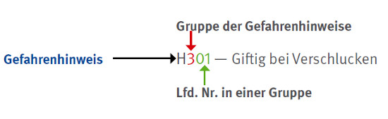

Hinweise zu Art und Schweregrad der Gefährdung durch einen Stoff oder ein Gemisch erhält der Anwender durch die H-Sätze (vergleichbar mit den früheren R-Sätzen). Der Buchstabe H steht für Hazard und bedeutet Gefahr. Die H-Sätze sind wesentlich detaillierter als die früheren R-Sätze. Die Kennziffern sind dreistellig und nach folgender Systematik aufgebaut:

Gruppe der Gefahrenhinweise:
| • | Physikalisch-chemische Gefahren | H200 ff |
| Beispiel: H222 – Extrem entzündbares Aerosol. | ||
| • | Gesundheitsgefahren | H300 ff |
| Beispiel: H330 – Lebensgefahr bei Einatmen. | ||
| • | Umweltgefahren | H400 ff |
| Beispiel: H410 – Sehr giftig für Wasserorganismen mit langfristiger Wirkung. | ||
Auch Kombinationen von H-Sätzen, wie es bei R-Sätzen üblich war, wurden in die CLP-Verordnung aufgenommen, allerdings nur bei der Gefahrenklasse Akute Toxizität.
Die vollständige Liste aller H-Sätze befindet sich im Anhang 4 – Gefahrenhinweise – H-Sätze.
Die Europäische Gemeinschaft hat zusätzliche H-Sätze verabschiedet, um das bisherige Schutzniveau aus den derzeit noch geltenden Rechtsvorschriften beizubehalten. Diese H-Sätze werden mit EUH und ebenfalls einer dreistelligen Kennziffer angegeben z. B.:
| • | EUH 014 | Reagiert heftig mit Wasser |
| • | EUH 066 | Wiederholter Kontakt kann zu spröder oder rissiger Haut führen |
| • | EUH 204 | Enthält Isocyanate. Kann allergische Reaktionen hervorrufen. |
Die vollständige Liste aller EUH-Sätze befindet sich im Anhang 4 unter den H-Sätzen.